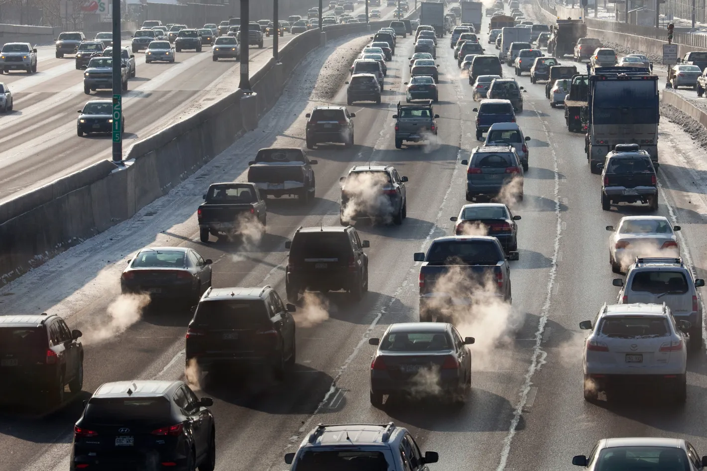
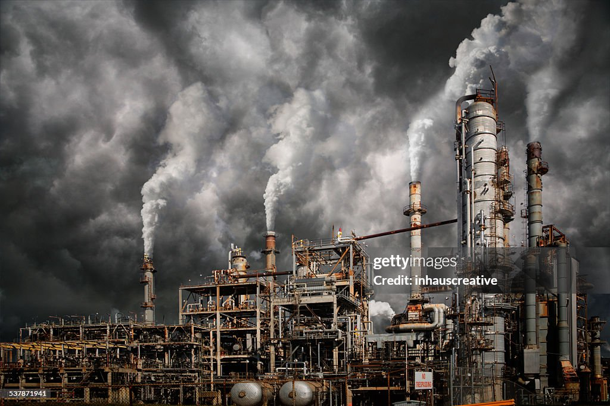

Causes of Air Pollution
Some common causes of air pollution include:
Burning fossil fuels
The incomplete combustion of fossil fuels like coal, oil, and wood releases harmful gases like carbon monoxide and sulfur dioxide into the atmosphere.
Industrial activities
Factories and manufacturing facilities emit harmful gases and chemicals like carbon monoxide, hydrocarbons, and organic compounds.
Transportation
Cars, trucks, and buses release pollutants into the air.
Agriculture
The use of pesticides, insecticides, and fertilizers releases hazardous chemicals into the atmosphere. Farmers also burn fields and old crops to clear them up, which releases toxic pollutants.
Mining
The extraction of minerals from the earth releases dust and chemicals into the air.
Everyday activities
Even small, everyday activities like dry cleaning, filling up your car with gas, and degreasing and painting operations can contribute to air pollution.
Air pollution can cause a number of health risks, including early death, asthma attacks, allergic responses, neurological damage, and cancer. Some of the most common air pollutants include particulate matter, carbon monoxide, ozone, nitrogen dioxide, and sulfur dioxide
- Vehicular Emissions: Cars, trucks, and buses release harmful gases such as carbon monoxide, nitrogen oxides, and particulate matter. 
- Industrial Activities: Factories, power plants, and manufacturing industries emit a wide range of pollutants into the atmosphere. 
- Burning Fossil Fuels: The combustion of coal, oil, and natural gas for energy leads to the release of greenhouse gases and other pollutants.
- Deforestation: Cutting down trees reduces the planet's capacity to absorb carbon dioxide, contributing to air pollution.
- Natural Sources: Wildfires, volcanic eruptions, and dust storms can also contribute to air pollution.